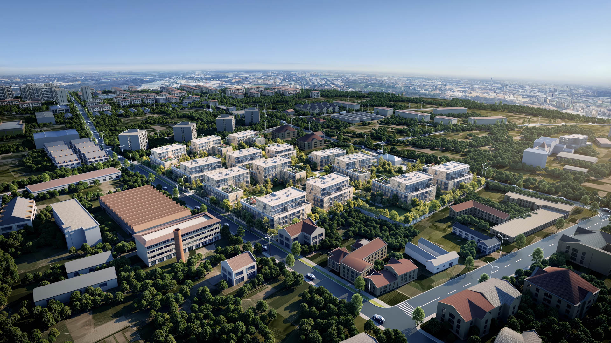
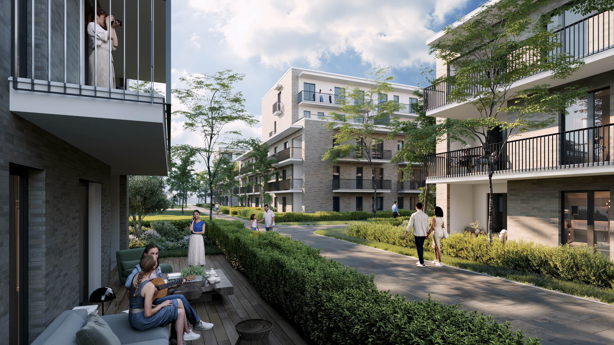
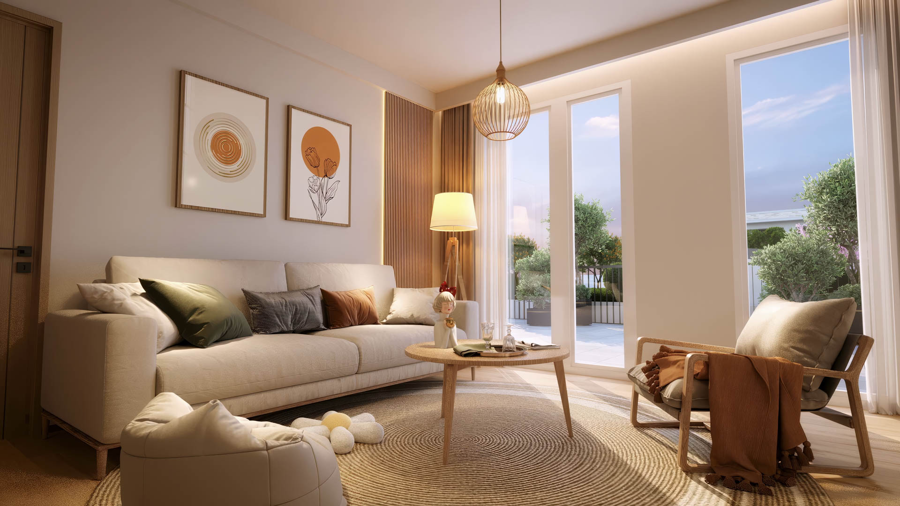

Budapest X. kerület Harmat utca 22.
Harmat Lakópark
Új építésű otthonok Óhegyen.
Látványterv / illusztráció
- Összes tervezett lakás
- 398a teljes projektben
- Első ütem
- 124tervezett lakás
- Első ütem összterülete
- 8388m²az első ütemben
- Első ütem várható átadása
- 2028II. negyedév
Az átadás tervezett időpontja tájékoztató jellegű; a pontos időpont az építési ütemezés és a szerződés függvénye.
A projekt
Otthonok egy belső udvar körül.
A Harmat utca 22. alatt tervezett lakópark lakásait és belső udvarát együtt mutatják be a tervek. A különböző elrendezések között a családjuk igényeihez illő otthont kereshetnek.

Lakások és alaprajzok
Különböző méretű és elrendezésű otthonok. Az erkély, a terasz vagy a kertkapcsolat kialakítása az adott lakás tervétől függ.
Mélygarázs és tárolók
Az első ütem terveiben 124 mélygarázs-beálló és 92 tároló szerepel. Az adott lakáshoz kapcsolódó lehetőségekről értékesítőink adnak tájékoztatást.
Óhegy, Budapest részeként
X. kerületi cím, városi kapcsolatok és az Óhegy park közelsége. A környezetet érdemes személyesen is megismerni.
Elérhetőségek és helyszínAz építési naplóból
A tervektől a megvalósulásig.
Valódi helyszíni felvételek dokumentálják az építkezést. Az itt bemutatott kép az építési napló archív részlete, nem a jelenlegi készültséget mutatja.
Korábbi mérföldkőAz értékesítés indult.
Megnézem az építési naplót
Az otthon belülről
Az alaprajz a kiindulópont.
A nappali, a szobák és a kültéri kapcsolatok elrendezése együtt határozza meg, hogyan használható egy otthon. A kiválasztott lakás részleteit az alaprajz és a műszaki leírás alapján érdemes áttekinteni.
Megnézem az alaprajzokatA következő lépés
Találják meg a saját otthonukat.
Nézzék át a lakásokat, vagy beszéljék át kérdéseiket értékesítési csapatunkkal.
Értékesítés
+36 30 073 3375 ertekesites@harmat22.hu1105 Budapest,
Harmat utca 22.